東京象虫図案見本帖・原画集
GRADUATION RESEARCH
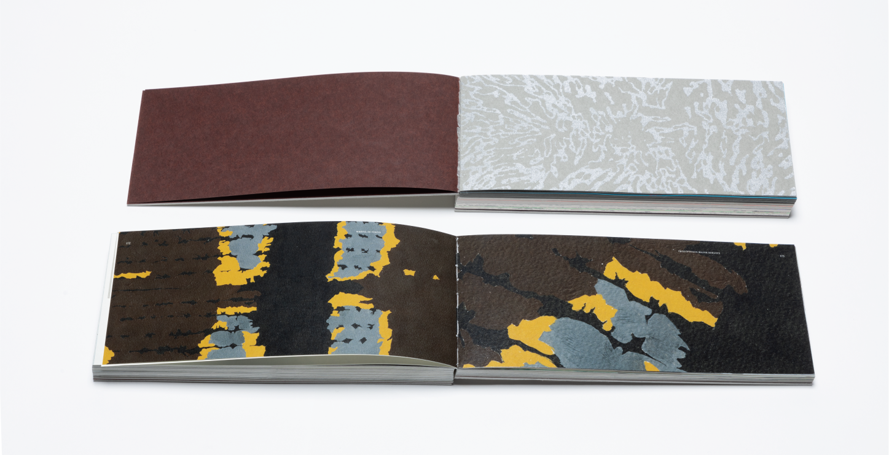
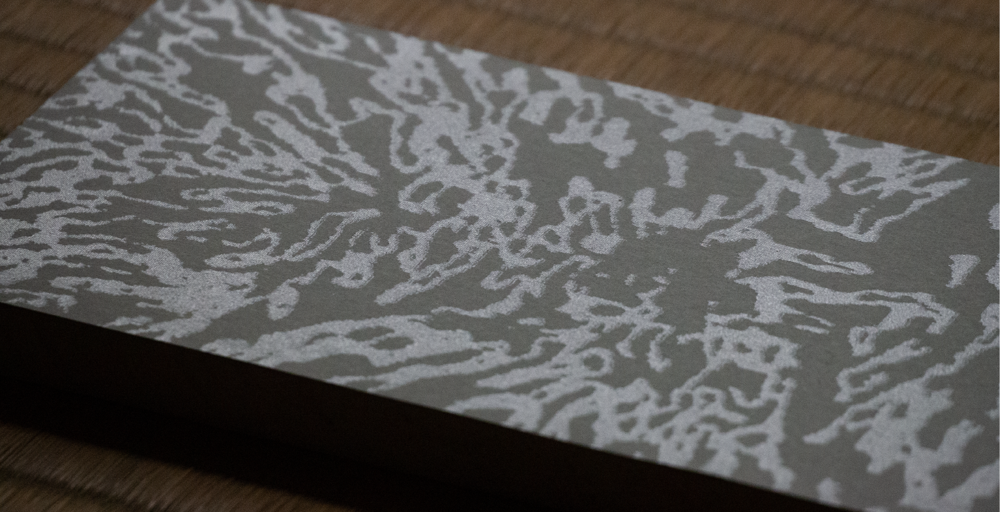
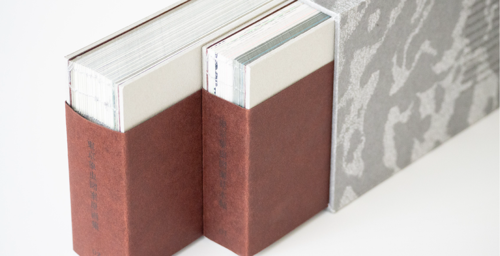
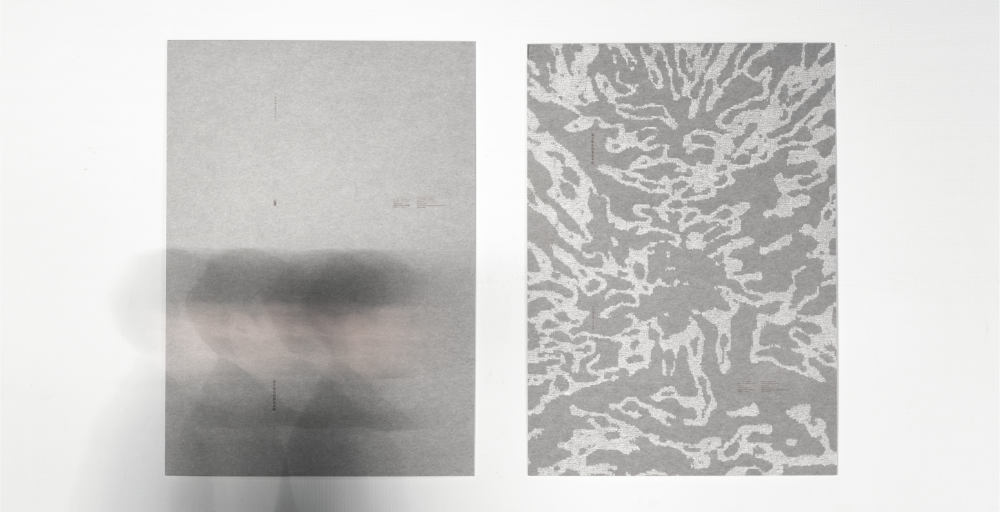
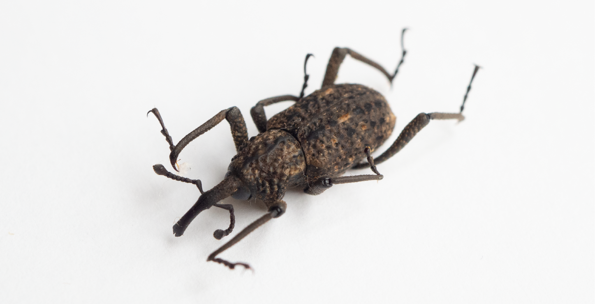
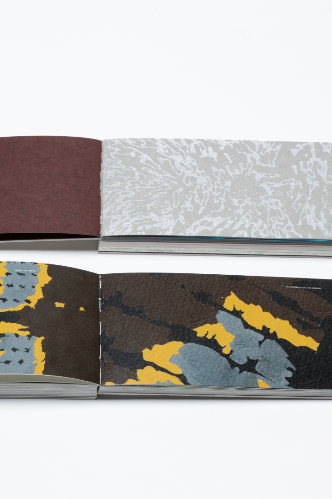
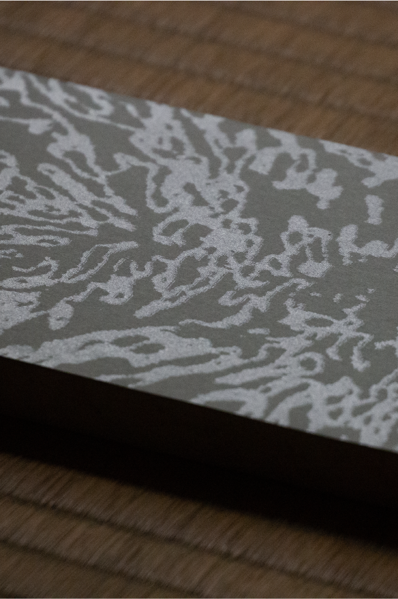
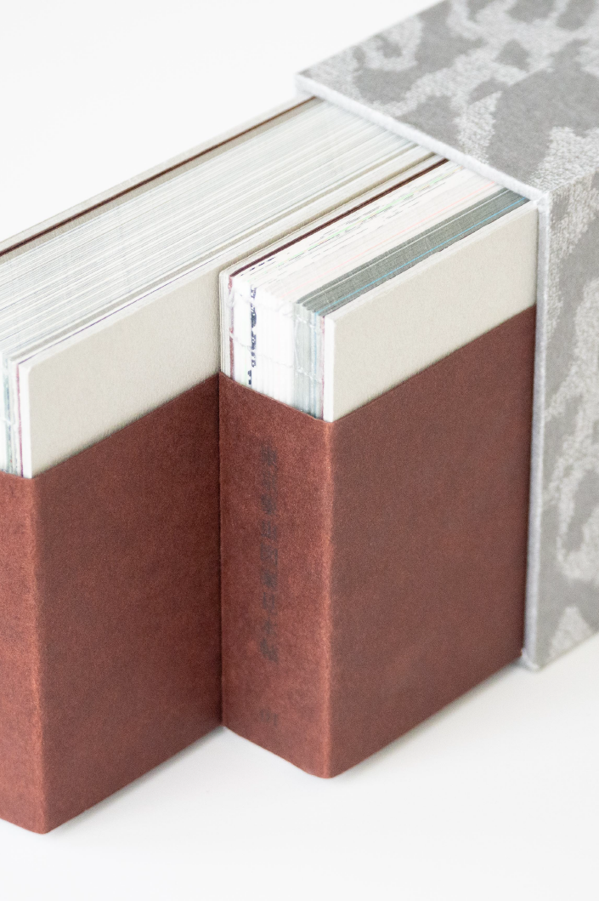
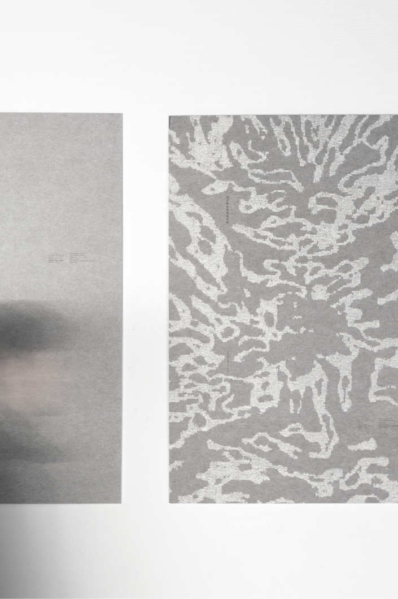
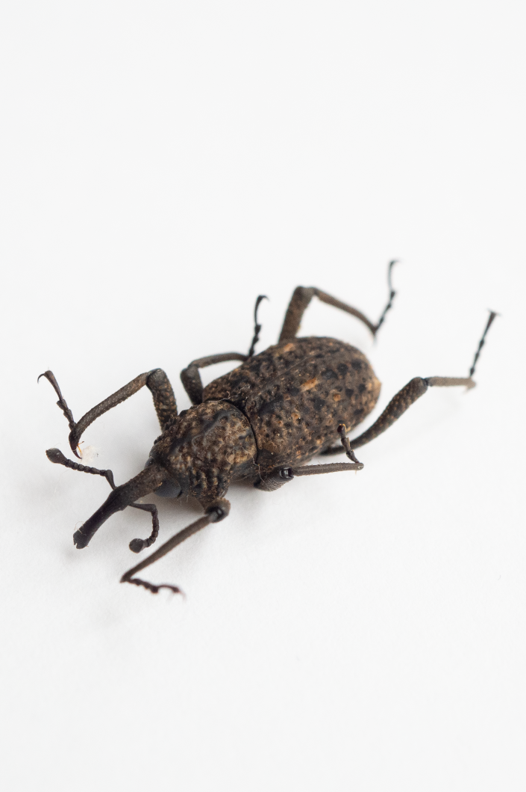
自然界の形態をデザインとして用いる編集方法の研究
東京に生息する象虫20種類の柄から、模様を制作し、それをライブラリーとしてまとめたものである。この作品を作るにあたってテーマが2点ある。1点目は「バイオミミクリー」という考え方である。和訳すると「生物模倣」という考え方で、文字通り生物や自然界から知恵を借りて新しい技術やデザインを作り出すことである。この考え方をグラフィックデザインに応用できないかと考え、本制作を始めた。次に2点目は「ミクロなものを拡大して観る視点」である。本制作の土台として、ゾウムシ実物の柄を観察する際に肉眼で観察する際には観ることができない細かい柄をマクロレンズを通して観ることで新しい柄や見たこともない柄を発見できるのではないかと考え、この視点で観察を始めた。
東京に生息するゾウムシ20種類の観察を行い、1種類ごとに上翅の観察をしスケッチをおこなった。観察で得られたゾウムシの柄や視点を応用して模様を制作し、それらをライブラリーとして糸がかり綴じの本にまとめた。また、柄の見本帖と別で観察の際に行ったスケッチや、写真等を掲載した本の制作を行った。
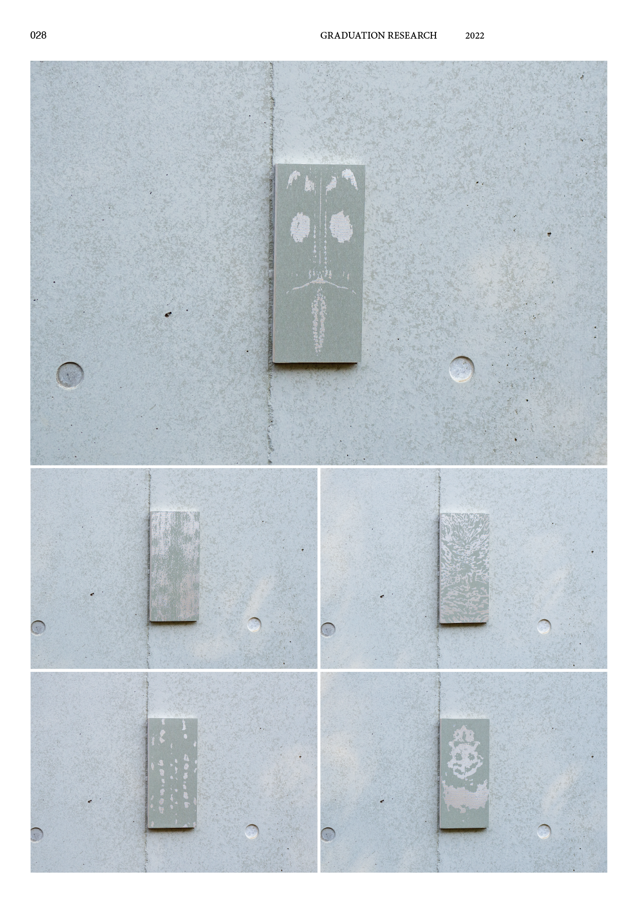
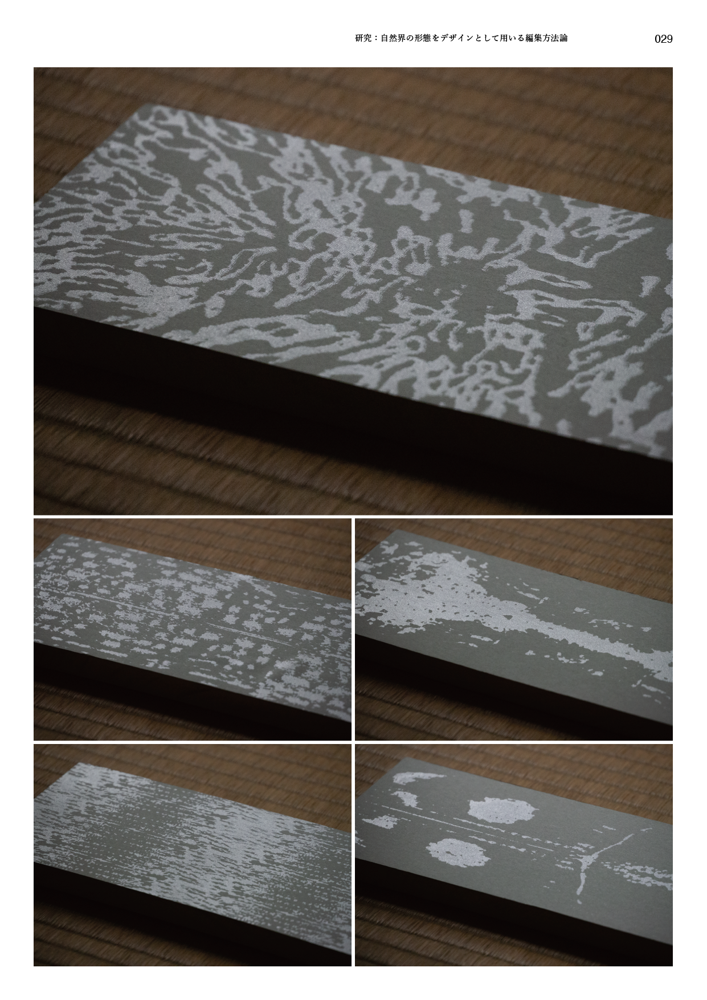
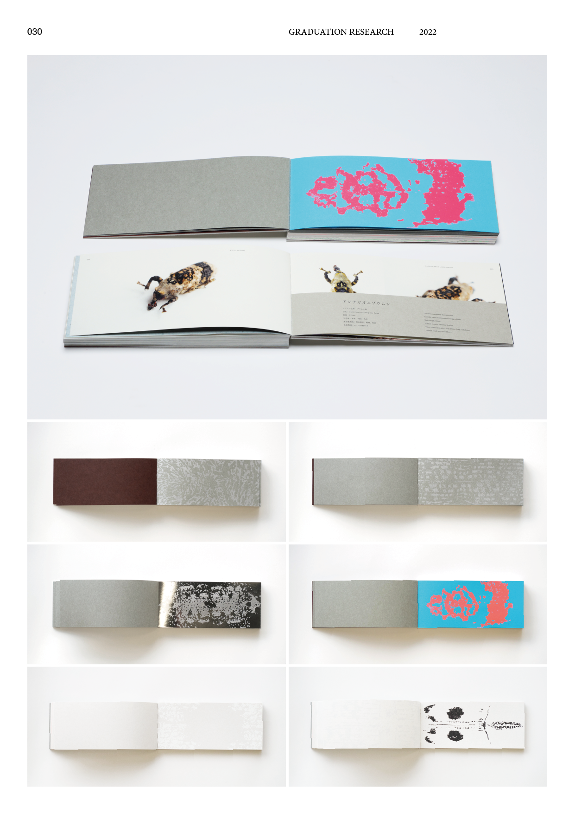
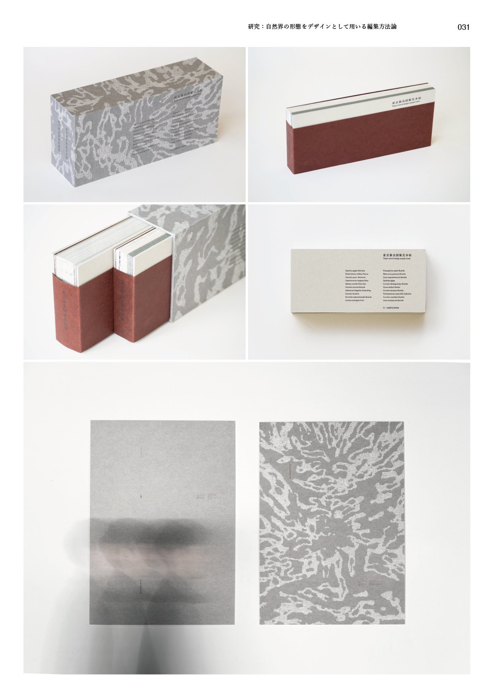
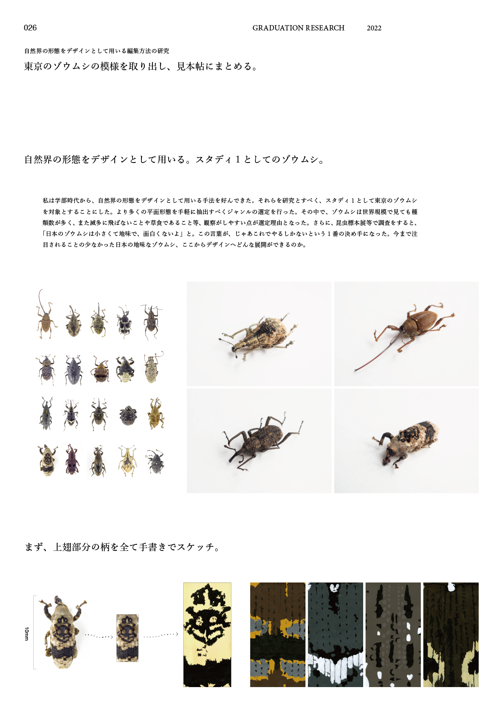
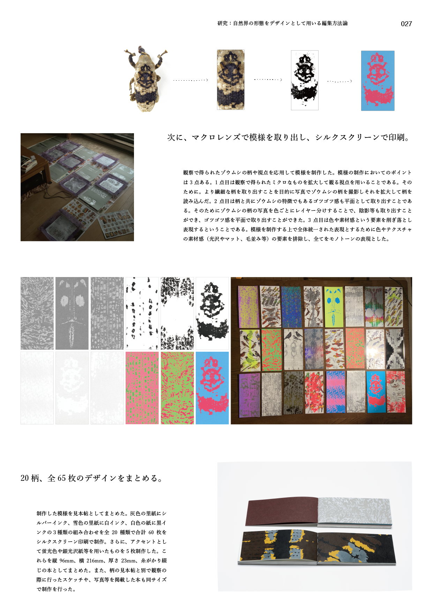